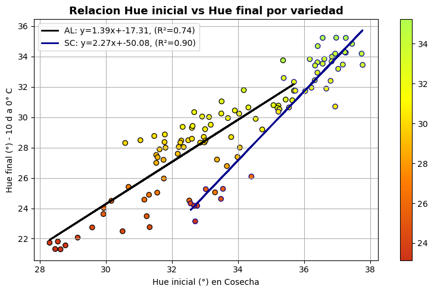
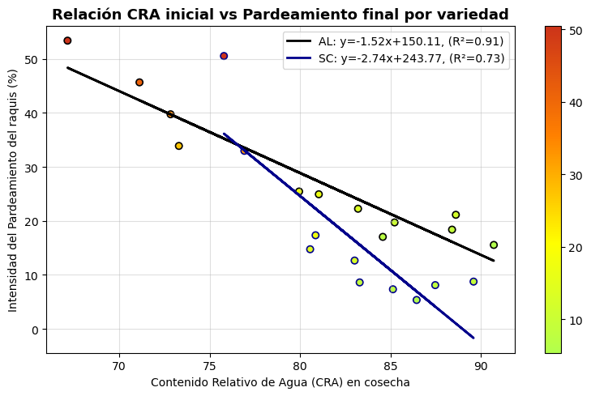
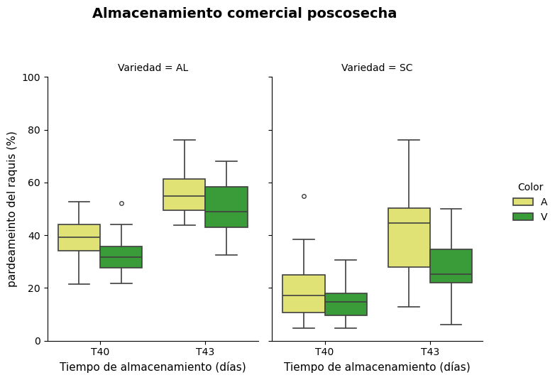

# Import librerias necesarias
import pandas as pd
import openpyxl
import numpy as np
import seaborn as sns
import matplotlib.pyplot as plt
import matplotlib.colors as mcolors
from sklearn.metrics import r2_score, mean_squared_error
from sklearn.linear_model import LinearRegressionSensibilidad al pardeamiento del raquis de uva de mesa
Resultados
1. Caracterizacion inicial a cosecha
print('Tabla 1: Caracterizacion inicial en cosecha, cv. Allison y S. Celebretion.(media ± DE)')
Cosecha = pd.read_excel(r'../datos/caracterizacion inicial.xlsx')
df = pd.DataFrame(Cosecha)
df.columns = df.columns.str.strip() # Normalizar nombres de columnas
# Filtro de datos de acuerdo evaluacion 0h,3h,18h
df_filtrado = df[df["Evaluacion"].isin(["E00", "E03", "E18"])]
# Tabla resumen de caracterizacion inicial
df_resumen =(df_filtrado.groupby('Variedad')
[['TSS','Acidez_titulable', 'Peso', 'Calibre_Ecuatorial', 'Firmeza']]
.agg(['mean', 'std','count'])
.round(2)
.reset_index()
)
# creamos un tabal media + DE
tabla_resumen = pd.DataFrame()
tabla_resumen["Variedad"] = df_resumen["Variedad"]
for var in ["TSS", "Acidez_titulable", "Peso", "Calibre_Ecuatorial", "Firmeza"]:
tabla_resumen[var] = df_resumen.apply(
lambda x: f"{x[(var, 'mean')]:.2f} ± {x[(var, 'std')]:.2f}", axis=1
)
# Renombrar encabezados
tabla_resumen = tabla_resumen.rename(columns={
"TSS": "TSS (°Brix)",
"Acidez_titulable": "Acidez Titulable (g/L)",
"Peso": "Peso (g)",
"Calibre_Ecuatorial": "Calibre (mm)",
"Firmeza": "Firmeza (gf mm-1)"
})
print(tabla_resumen)Tabla 1: Caracterizacion inicial en cosecha, cv. Allison y S. Celebretion.(media ± DE)
Variedad TSS (°Brix) Acidez Titulable (g/L) Peso (g) Calibre (mm) \
0 AL 19.04 ± 1.04 0.64 ± 0.07 10.18 ± 1.82 22.57 ± 1.58
1 SC 18.04 ± 0.80 0.78 ± 0.09 9.03 ± 1.61 23.60 ± 1.54
Firmeza (gf mm-1)
0 322.48 ± 64.59
1 242.69 ± 18.44 2. Relación de acuedo hue inicial, Contenido Relativo del agua
# 1. Cargamos archivos
# =====================================================================================
datos_correlacion = pd.read_csv(r'../datos/Pardeamiento uva de mesa.csv', sep=';')
df = pd.DataFrame(datos_correlacion)
df.columns = df.columns.str.strip() # Normalizar nombres de columnas
#Visualizar las primeras columnas de df.
#print(df.columns)
#df.info()
#df.head()
# 2. Crear un identificador único por racimo
df['ID'] = (df['Variedad'].astype(str) + '_' +
df['Productor'].astype(str) + '_' +
df['Tratamientos'].astype(str) + '_' +
df['Repeticion'].astype(str) + '_' +
df['N_Racimo'].astype(str))
# 3. Pivotar para tener columnas separadas
tabla_correlaciones = (
df.pivot_table(
index=['Variedad', 'ID'],
columns='Tiempo',
values='Hue'
)
.reset_index()
.round(2) # redondear a 2 decimales
)
#Visualizar tabla de correlaciones
#tabla_correlaciones.head()
#tabla_correlaciones.info()
# Colormap personalizado con ayuda de Chatgpt
colors = [
(0.8, 0.2, 0.1), # Rojo degradado (menos saturado, más natural)
(1.0, 0.5, 0.0), # Naranja
(1.0, 1.0, 0.0), # Amarillo
(0.7, 1.0, 0.3) # Verde amarillento
]
cmap_rav = mcolors.LinearSegmentedColormap.from_list("rojo_amarillo_verde", colors, N=256)
# 4. Crear figura de correlaciones por variedad hus vs hue
plt.figure(figsize=(9, 5))
variedades = tabla_correlaciones['Variedad'].unique()
# 5. Colores distintos para las líneas
colores_linea = ['black', 'blue']
# Correlaciones del T0 y T10
sc = plt.scatter(tabla_correlaciones['T0'],
tabla_correlaciones['T10'],
c=tabla_correlaciones['T10'],
cmap=cmap_rav
)
# Regresión lineal por variedad
for i, variedad in enumerate(variedades):
datos = tabla_correlaciones[tabla_correlaciones['Variedad'] == variedad]
X = datos[['T0']].values
y = datos['T10'].values
#Regresion linel
modelo = LinearRegression()
modelo.fit(X, y)
y_pred = modelo.predict(X)
# Calcular R², pendiente, intercepto
r2 = r2_score(y, y_pred)
pendiente = modelo.coef_[0]
intercepto = modelo.intercept_
# Dibujar la línea de regresión variedad
plt.plot(X, y_pred,
color=colores_linea[i % len(colores_linea)],
lw=2, label=f'{variedad}: y={pendiente:.2f}x+{intercepto:.2f}, (R²={r2:.2f})')
# Etiquetas y formato Grafico
plt.xlabel('Hue inicial (°) en Cosecha')
plt.ylabel('Hue final (°) - 10 d a 0° C')
plt.title('Relacion Hue inicial vs Hue final por variedad', fontsize=13, weight='bold')
plt.colorbar()
plt.grid(True)
plt.legend(frameon=True)
plt.tight_layout()
plt.show()
# 2 Correlacion de acuerdo CRA vs pardeamiento -----------------------------------------------------------------------
datos_CRA = pd.read_csv(r'../datos/Contenido relativo de agua.csv', sep=';')
#datos_CRA.info()
#Calculamos el promedio CAR en T0
CRA_promedio_T0 = (
datos_CRA
.groupby(['Productor', 'Variedad', 'Color', 'Tratamientos'])['CAR']
.mean()
.round(2)
.reset_index()
)
#Filtrar pardeamiento T10 ---
Pardo_t10 = df[df['Tiempo'] == 'T10']
#print(Pardo_t10.columns)
#Calculamso en promedio pardeamiento T10
Pardo_promedio_T10 = (
Pardo_t10
.groupby(['Productor', 'Variedad', 'Color', 'Tratamientos'])['Pardo']
.mean()
.round(2)
.reset_index()
)
#Unimos ambos promedio por columnas comunes
CAR_VS_PAR = pd.merge(
CRA_promedio_T0,
Pardo_promedio_T10,
on=['Productor', 'Variedad', 'Color', 'Tratamientos']
)
colors = [
(0.7, 1.0, 0.3), # Verde amarillento
(1.0, 1.0, 0.0), # Amarillo
(1.0, 0.5, 0.0), # Naranja
(0.8, 0.2, 0.1) # Pardo/rojo degradado
]
cmap_rav1 = mcolors.LinearSegmentedColormap.from_list("verde_a_pardo", colors, N=256)
# --- Crear gráfico de correlación CAR vs Pardo ---
plt.figure(figsize=(10, 6))
variedades = CAR_VS_PAR['Variedad'].unique()
colores_linea = ['black', 'blue']
# Dispersión global
sc = plt.scatter(CAR_VS_PAR['CAR'], CAR_VS_PAR['Pardo'], c=CAR_VS_PAR['Pardo'], cmap= cmap_rav1)
# Regresión lineal por variedad
for i, variedad in enumerate(variedades):
datos = CAR_VS_PAR[CAR_VS_PAR['Variedad'] == variedad]
X = datos[['CAR']].values
y = datos['Pardo'].values
modelo = LinearRegression()
modelo.fit(X, y)
y_pred = modelo.predict(X)
r2 = r2_score(y, y_pred)
pendiente = modelo.coef_[0]
intercepto = modelo.intercept_
plt.plot(X, y_pred,
color=colores_linea[i % len(colores_linea)],
lw=2,
label=f'{variedad}: y={pendiente:.2f}x+{intercepto:.2f}, (R²={r2:.2f})')
# --- Formato final ---
plt.xlabel('Contenido Relativo de Agua (CRA) en cosecha')
plt.ylabel('Intensidad del Pardeamiento del raquis (%)')
plt.title('Relación CRA inicial vs Pardeamiento final por variedad', fontsize=13, weight='bold')
plt.colorbar()
plt.grid(alpha=0.4)
plt.legend(frameon=True)
plt.tight_layout()
plt.show()
3. Almacenamiento comercial en postcosecha.
Revisara si las varibles de acuerdo el color en cosecha influyen en el pardeamiento del raquis de uva de mesa de amabas variedades.
# 1. Cargar datos
# ===================================================
df = pd.read_csv(r'../datos/Almacenamiento comercial.csv', sep= ';')
df.columns = df.columns.str.strip()
# 2. Opcional: ordenar niveles de Tiempo si quieres
orden_tiempo = ['T40', 'T43']
if set(orden_tiempo).issuperset(df['Tiempo'].unique()):
df['Tiempo'] = pd.Categorical(df['Tiempo'], categories=orden_tiempo, ordered=True)
# 3. Crear boxplot facetado por Variedad
colores = {'A': "#f2f464",
'V': "#29ac29"}
g = sns.catplot(
data=df,
kind='box',
x='Tiempo',
y='Pardo',
hue='Color',
col='Variedad',
palette=colores,
height=5,
aspect=1,
fliersize=4, # tamaño de outliers
linewidth=1.2
)
# Ajusta leyenda fuera del grafico
g._legend.set_bbox_to_anchor((1.12, 0.5))
# ===================================================
# 4. Ajustes finales — Escala Y fija
for ax in g.axes.flatten():
ax.set_ylim(0, 100) # ← AQUÍ SE FIJA LA ESCALA DE 0 A 100
ax.set_ylabel("% Área parda del raquis", fontsize=11)
ax.set_xlabel("Tiempo de almacenamiento (días)", fontsize=11)
ax.tick_params(axis='both', labelsize=10)
# ===================================================
# 5. Títulos y estética final
g.fig.suptitle(
" Pardeamiento del raquis durante el almacenamiento comercial poscosecha",
y=1.05,
fontsize=14,
fontweight='bold'
)
for ax in g.axes.flatten():
ax.set_ylabel("% Área parda del raquis", fontsize=11)
ax.set_xlabel("Tiempo de almacenamiento (días)", fontsize=11)
ax.tick_params(axis='both', labelsize=10)
plt.tight_layout()
plt.show()